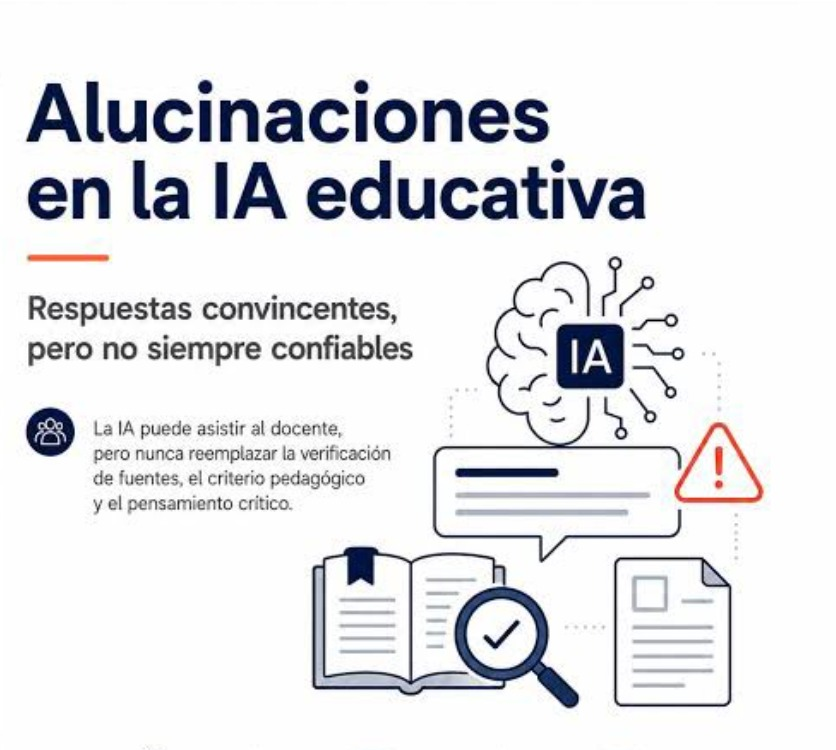

¿Sabías que...?
La IA no piensa ni entiende lo que escribe; solo predice la palabra que tiene más sentido matemático según lo que ha leído en internet.
La IA no piensa ni entiende lo que escribe; solo predice la palabra que tiene más sentido matemático según lo que ha leído en internet.
Nunca te fíes al 100% de una fecha, una cita textual o una fórmula dada por la IA sin antes comprobarla en un libro o sitio oficial.
La herramienta más potente contra la desinformación digital no es otro programa, sino tu pensamiento crítico.

Una alucinación en la IA ocurre cuando esta inventa datos falsos que parecen reales. Muchos estudiantes usan herramientas como ChatGPT o Gemini para sus tareas y entregan bibliografías o autores inventados sin verificar. Esto afecta a los alumnos, ya que pierden el pensamiento crítico, la capacidad de investigar y corren el riesgo de reprobar por entregar información errónea.
La cultura digital facilita el acceso a la información, pero la falta de verificación y el exceso de contenidos en internet suelen llevar a los estudiantes a utilizar datos falsos en sus trabajos escolares. Esto se debe a la prisa, el desconocimiento de la alfabetización digital y el uso inadecuado de las redes sociales. En consecuencia, presentar información incorrecta genera un bajo rendimiento académico, pérdida de credibilidad y conocimientos erróneos. Por ello, para evitar propagar la desinformación y fortalecer el pensamiento crítico, resulta indispensable verificar siempre las fuentes y fomentar un uso más responsable de la tecnología.

Verificación cruzada entre varios modelos (ChatGPT, Gemini, Claude, etc.), pedirle a la IA que cite fuentes primarias, solicitarle que separe hechos de suposiciones en una tabla, y contrastar directamente los datos con buscadores o sitios institucionales confiables.
Para investigar las alucinaciones en la Inteligencia Artificial, se consultaron cinco fuentes confiables y especializadas. La primera es la Gaceta de la UNAM (2024), respaldada por una prestigiosa institución científica para analizar el impacto educativo de la IA. La segunda es una publicación de la UNESCO (2023), clave por su enfoque oficial en la ética tecnológica global. La tercera corresponde a MIT Technology Review (2025), una revista especializada que explica técnicamente los fallos de estos modelos. La cuarta es BBC News Mundo (2024), un medio internacional con estrictos estándares de verificación, y la quinta es la Revista EdTech Focus (2025), enfocada en los riesgos del uso digital en estudiantes de nivel medio superior.
Imaginemos el caso de Carlos, un estudiante del CBTis 177 que, por la prisa de terminar una tarea de historia, le preguntó a una Inteligencia Artificial sobre un acontecimiento relevante sin verificar la respuesta. La IA, debido a sus conocidos errores de procesamiento, le entregó datos e inventó fuentes falsas que Carlos copió y pegó directamente en su trabajo escolar. Como consecuencia, al no aplicar habilidades de alfabetización digital ni un pensamiento crítico, obtuvo una mala calificación por presentar información errónea, perdió la confianza de su profesor y adquirió un aprendizaje incorrecto que afectó negativamente su formación académica.
Conoce a nuestro equipo